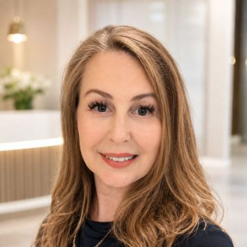

Что бесплатно, а что нет
Испанская государственная медицина устроена так: почти всё лечение — бесплатно, а стоматология — исключение. Seguridad Social покрывает для взрослых только:
- Неотложную помощь — острую боль, травму зуба, серьёзное воспаление
- Медицински необходимое удаление — включая зубы мудрости, если они вызывают проблему
- Осмотр и диагностику — первичный приём терапевта (médico de cabecera) при направлении на экстренный случай
Всё остальное — лечение кариеса, чистка, пломбы, каналы, коронки, протезирование, импланты, виниры, ортодонтия — не входит в бесплатный пакет ни для резидентов, ни для граждан Испании. Это оплачивается полностью из своего кармана в частной клинике, либо частично компенсируется отдельной стоматологической страховкой (seguro dental), если она у вас есть.
Частая путаница. Обязательный полис без сооплаты (sin copago), который нужен для подачи на ВНЖ, покрывает общую медицину — но стоматология в нём почти всегда отдельный продукт или вообще не включена. Если зубы для вас важны, уточняйте это у страхового агента отдельно, до оформления полиса — подробнее в статье о страховке в Испании.
Бесплатная стоматология для детей — PADI
Для детей ситуация лучше: в большинстве автономных сообществ работает программа PADI (Programa de Asistencia Dental Infantil) — она появилась в Стране Басков ещё в 1990 году и постепенно распространилась почти по всей Испании: Наварра, Андалусия, Арагон, Балеарские и Канарские острова, Эстремадура, Мурсия, Мадрид.
PADI покрывает бесплатно: регулярные осмотры, профилактику, обучение гигиене, рентген полости рта, лечение кариеса молочных и постоянных зубов, удаление молочных зубов. Возраст и точный набор услуг отличаются по регионам — где-то это дети 6–15 лет, где-то диапазон уже из-за бюджетных сокращений (например, в некоторых регионах только 6–8 лет, кроме детей с инвалидностью). Ортодонтия (брекеты) и сложное протезирование в программу обычно не входят — за них платят отдельно, даже детям.
Как узнать свой случай. Программа работает через обычную государственную поликлинику (CAP) — записывайтесь на приём к стоматологу по месту прописки и уточняйте точные условия именно вашего автономного сообщества, они периодически меняются.
Сколько стоит лечение зубов
Разброс цен в Испании большой и зависит от региона, клиники и статуса врача. Ниже — ориентир по частной стоматологии, собранный из реальных прайсов русскоязычных клиник и рыночных данных:
| Процедура | Ориентировочная цена |
|---|---|
| Профессиональная чистка | от €50 |
| Пломба (кариес) | €70–98 за зуб |
| Лечение канала | от €150 за один канал, больше при нескольких |
| Коронка | €400–800 |
| Винир | €300–600 за зуб |
| Имплант с коронкой (1 зуб) | €1500–2500 |
| Брекеты / выравнивание | от €2000 до €5000+, зависит от системы |
Цены на пломбы, чистку и каналы — из реального прайса русскоязычной клиники в Барселоне (см. ниже). Остальные ориентиры усреднены по рынку и могут заметно отличаться по регионам.
⚠️ Осторожно с подозрительно низкой ценой на импланты. Пакетные предложения «имплант под ключ за €800–1000» существуют, но часто именно так привлекали пациентов клиники, которые позже обанкротились, не закончив лечение (подробнее — в разделе про мошенничество ниже). Низкая цена сама по себе не повод для паники, но повод внимательнее проверить клинику перед тем, как платить за весь план лечения вперёд.
Стоматологическая страховка — когда она реально выгодна
Испанский seguro dental почти всегда работает не как обычная страховка с возмещением, а как сеть клиник со скидками (cuadro médico / tarifa plana): часть услуг включена бесплатно, остальное — по фиксированной сниженной цене у клиник-партнёров, а не бесплатно. Пойти к стоматологу вне сети — скидка не действует.
| Уровень полиса | Цена в месяц | Что обычно бесплатно |
|---|---|---|
| Базовый | €4,50–8 | 1 осмотр + 1 чистка в год, рентген |
| Средний | €8–16 | 2 чистки в год, расширенная диагностика, детям — фторирование |
| Премиум (без сооплаты, с имплантами и ортодонтией) | €10–25 | То же плюс скидки на импланты и брекеты без длительного ожидания |
Пломбы, каналы, коронки, протезы и импланты в любом из уровней обычно не бесплатны, а идут со скидкой по прайсу сети — например, имплант у одной крупной страховой обходится застрахованному от €1175 с гарантией 10 лет, против €1500–2500 без страховки на открытом рынке.
Что не покрывается почти никогда
- Отбеливание и прочая эстетика без медицинской необходимости
- Протезы и коронки, поставленные до оформления полиса
- Наркоз, госпитализация, челюстно-лицевая хирургия
- Лечение у стоматолога вне сети клиники-партнёра страховой
Срок ожидания (carencia) — главная ловушка
Купить полис и пойти на имплант на следующий день обычно не получится. Типичные сроки ожидания с момента покупки полиса: чистка и осмотр — сразу, пломбы — 2–3 месяца, лечение каналов — 3–6 месяцев, коронки, импланты и ортодонтия — 6–12 месяцев. Исключение — несколько премиальных полисов 2026 года у крупных страховых, где для имплантов срока ожидания нет вообще — но это нужно уточнять отдельно по конкретному продукту, это не стандарт рынка.
Коротко: когда это выгодно. Если нужен только ежегодный осмотр и чистка — страховка почти всегда окупается с первого бесплатного визита. Если нужна одна разовая пломба в этом году — часто дешевле заплатить напрямую, без полиса. Если планируете имплант или брекеты не срочно — смотрите на полис без срока ожидания, он может окупиться с одной процедуры. Если протезы или коронки уже стоят — страховка на них не поможет, это считается «до полиса».
Разобраться, какой конкретно полис покрывает нужную вам процедуру без долгого ожидания — отдельная работа, которую делает страховой агент, а не сравнение сайтов страховых компаний вручную:
Поможет подобрать медицинский полис и уточнить, покрывает ли он стоматологию и в каком объёме, прежде чем вы заплатите за год вперёд.
Перейти к профилю →Почему испанцы сами едут лечить зубы за границу
Это не городская легенда — дентальный туризм из Испании реален и массовый. Из-за высоких цен на импланты и протезирование в самой Испании тысячи испанцев ежегодно летают в Турцию (Стамбул, Анталья, Измир), Венгрию (Будапешт — один из мировых центров дентального туризма) и Португалию. Разница в цене — порядка 40–80% в зависимости от направления: в Турции имплант может стоить на 60–80% дешевле, чем в Испании, в Португалии — обычно на треть дешевле.
Логика простая: для разовой пломбы или чистки лететь никуда не имеет смысла — разница в цене не покроет билеты и отель. А вот для имплантации нескольких зубов, полного протезирования или ортодонтии поездка за границу иногда реально экономит тысячи евро, даже с учётом перелёта и проживания.
Если рассматриваете такой вариант — закладывайте минимум два визита (установка и контроль/коррекция), узнавайте о гарантии и о том, что будет, если потребуется доработка уже после возвращения в Испанию: это главный риск лечения за границей, а не сама процедура.
Как не нарваться на мошенников
Качество испанской стоматологии в среднем нормальное, но у отрасли есть тёмная история, о которой стоит знать до того, как платить за дорогое лечение вперёд.
iDental — сеть из 24 клиник, работавшая с 2014 года, обанкротилась в 2018-м, оставив более 350 000 пациентов без законченного лечения и без возврата денег. Испанская стоматологическая ассоциация назвала это крупнейшим стоматологическим скандалом в мире. Vitaldent — другая крупная сеть, у которой схожим образом рухнула франчайзинговая модель, и тысячи пациентов, уже оплативших лечение полностью, остались с подвешенными процедурами.
Схема в обоих случаях была одинаковой: агрессивно низкие цены, упор на немедленную продажу большого плана лечения и требование оплатить всё целиком до начала работы.
⚠️ Как проверить клинику перед оплатой. Узнайте регистрационный номер врача в официальной профессиональной коллегии вашего региона (например, COEC — Col·legi Oficial d'Odontòlegs i Estomatòlegs в Каталонии, в других регионах — свой colegio) и при желании сверьте его на сайте коллегии. Избегайте клиник, которые настаивают на полной предоплате всего плана лечения сразу — нормальная практика — оплата по этапам, по факту выполненной работы.
Можно ли попасть на экстренный приём ночью или в выходные
Да — в крупных городах есть службы urgencias dentales (стоматологическая неотложная помощь), которые работают по вечерам и выходным, но обычно платно даже если это частная клиника с дежурным врачом. Уточняйте дежурные часы у своей постоянной клиники заранее, чтобы не искать в панике ночью — или ищите по запросу «urgencias dentales» с названием своего города.
Стоматолог на русском — где найти
На платформе Experty.es работает проверенный русскоязычный стоматолог с официальной лицензией в Испании:

Главный врач и основательница клиники Diente Sano. 20+ лет опыта, лицензия COEC №5600. Лечение кариеса, профессиональная гигиена, каналы, протезирование. Принимает на русском языке.
Перейти к профилю →Частые вопросы
Только экстренная часть. Государственная медицина (Seguridad Social) покрывает острую боль, травмы, серьёзные инфекции и медицински необходимое удаление зубов, включая зубы мудрости. Лечение кариеса, чистка, коронки, виниры и импланты не входят в бесплатный пакет и оплачиваются отдельно в частной клинике.
Да, в большинстве автономных сообществ работает программа PADI (Programa de Asistencia Dental Infantil) — бесплатные осмотры, профилактика, гигиена и базовое лечение для детей. Конкретный возраст и перечень услуг отличаются по регионам: где-то это 6–15 лет, где-то диапазон уже из-за сокращений бюджета. Ортодонтия и сложное протезирование в программу обычно не входят.
Ориентир по частной стоматологии: пломба — от €70 до €98, профессиональная чистка — от €50, лечение одного канала — от €150, коронка — €400–800, винир — €300–600 за зуб, имплант под ключ с коронкой — обычно €1500–2500 за один зуб, брекеты — от €2000 до €5000+ в зависимости от системы. Точная цена зависит от клиники, региона и сложности случая.
Как правило нет. Обязательный полис без сооплаты (sin copago), который нужен для подачи на ВНЖ, покрывает общую медицину, но стоматология почти всегда вынесена в отдельный продукт или вообще не включена. Если зубы для вас важны, уточняйте покрытие стоматологии у страхового агента отдельно, до оформления полиса.
Зависит от того, что вам нужно. Если это только ежегодный осмотр и чистка — полис от €5–8 в месяц почти всегда окупается с первого бесплатного визита. Если нужна одна разовая пломба в этом году — часто дешевле заплатить напрямую. Для импланта или брекетов ищите полис без срока ожидания (carencia) на эту процедуру — иначе ждать покрытия можно 6–12 месяцев. Протезы и коронки, поставленные до полиса, страховка не покрывает в любом случае.
Из-за высоких цен на импланты и протезирование в самой Испании тысячи испанцев ежегодно едут в Турцию, Венгрию и Португалию — там те же процедуры обходятся на 40–80% дешевле. Для разовой пломбы или чистки лететь нет смысла, но для имплантации нескольких зубов или полной реконструкции разница в цене может полностью покрыть стоимость поездки.
В Испании были крупные скандалы с сетевыми клиниками — iDental (более 350 000 пациентов, мошенничество на €60 млн) и Vitaldent — обе привлекали подозрительно низкими ценами и требовали полную предоплату всего плана лечения вперёд. Перед длительным лечением проверяйте регистрацию врача в официальной коллегии стоматологов региона (например, COEC в Каталонии) и избегайте клиник, настаивающих на полной предоплате сразу.
Да — в крупных городах есть службы urgencias dentales (стоматологическая неотложная помощь), которые работают по вечерам и выходным, обычно платно. Уточняйте дежурные часы у своей клиники заранее или ищите дежурные кабинеты по запросу «urgencias dentales» с названием города.